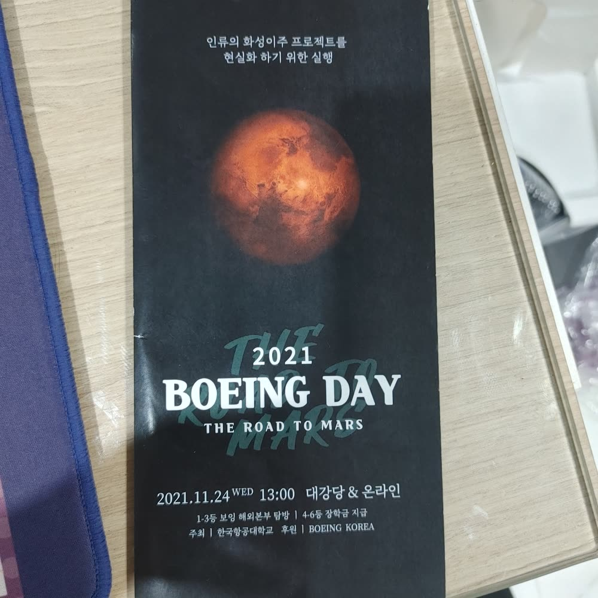

Boeing이 주최한 화성 이주 아이디어 공모전 'Boeing Day: The Road to Mars'에서, 로켓 연료만으로 화성 왕복 수송을 감당하기 어렵다는 문제의식에서 출발해 스카이훅(Skyhook) — 궤도에서 회전하는 테더(케이블) 구조물로 우주선을 건져 올리고 던져 보내는 수송 시스템 — 을 제안했습니다. 1학년 때 참가한 첫 공모전으로, 항공우주 분야 진로의 출발점이 된 프로젝트입니다.

🏆 2021 Boeing Day 3등 수상. 심사 피드백과 예상 질문 대응을 준비하며 "아이디어를 공학적 근거로 방어하는 법"을 처음 배운 대회였습니다.